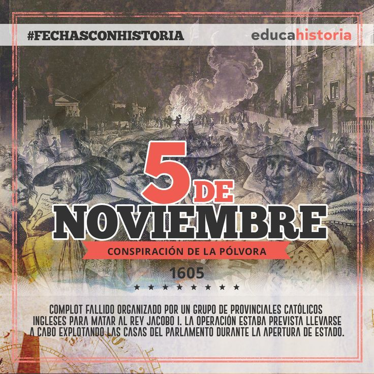

5 de Noviembre

El 5 de noviembre es una fecha histórica en Panamá
que conmemora la separación del país de
Colombia en 1903, consolidando la
independencia de la República de Panamá.
Contexto Histórico
El 5 de noviembre de 1903, en la ciudad de Colón, se consolidó el movimiento de separación
que había comenzado el 3 de noviembre. Este día es significativo porque marcó un
avance crucial en la búsqueda de la independencia de Panamá, que había estado bajo
el dominio colombiano. La movilización de fuerzas estadounidenses y el liderazgo de figuras
como Porfirio Meléndez fueron determinantes en este proceso.
Celebraciones y conmemoraciones
En Panamá, el 5 de noviembre se celebra con diversas actividades patrióticas.
Las festividades incluyen desfiles, ceremonias oficiales y eventos culturales
que reflejan el orgullo nacional. En Colón, donde se originó el movimiento
de separación, se llevan a cabo actos conmemorativos que incluyen la
izada del Pabellón Nacional y homenajes a figuras históricas.
Importancia cultural
Esta fecha no solo es un recordatorio de la lucha por la independencia,
sino que también simboliza la identidad y la resiliencia del pueblo panameño.
Las celebraciones son una mezcla de historia, orgullo y unidad, y son una
oportunidad para que los panameños reflexionen sobre su pasado y su futuro.
En resumen, el 5 de noviembre es un día de gran significado para Panamá,
representando la lucha por la soberanía y la consolidación de la identidad nacional.
Historia
El 5 de noviembre de 1903, Panamá vivió un momento decisivo
en su historia al asegurar su independencia de Colombia. Aunque
la separación fue proclamada oficialmente el 3 de noviembre de ese año
en la ciudad de Panamá, los eventos del 4 y 5 de noviembre en la provincia
de Colón fueron fundamentales para garantizar el éxito del movimiento separatista
. La Junta Patriótica Revolucionaria de Colón, liderada por figuras como
Porfirio Meléndez, organizó acciones clave que impidieron
que las fuerzas colombianas sofocaran el movimiento.
Eventos clave
Acciones en Colón: El 5 de noviembre, el pueblo de Colón, bajo el liderazgo
de Meléndez, logró evitar que el Batallón Tiradores de Colombia utilizara
el ferrocarril para llegar a la Ciudad de Panamá. Esto fue crucial para el éxito del movimiento separatista.
Apoyo Internacional: La presencia de la flota estadounidense
en el istmo también jugó un papel importante, ya que brindó apoyo a
los panameños durante este período de tensión.
Celebraciones
Cada 5 de noviembre, Panamá celebra el "Día Nacional"
, que no solo conmemora la independencia, sino que también es un
día de orgullo nacional. Las festividades incluyen desfiles, música
, y ceremonias en las plazas, donde se rinde homenaje a los héroes de la independencia
. La gastronomía panameña, como el sancocho y el arroz con pollo
, también es parte integral de las celebraciones.
Reconocimiento oficial
La importancia de esta fecha fue reconocida oficialmente mediante la Ley 55,
que la declaró como un día feriado obligatorio en Panamá,
consolidando su significado en la identidad nacional del país.
El 5 de noviembre es, por lo tanto
, un día de reflexión sobre la lucha por la independencia y un
momento para celebrar la identidad y la soberanía panameña.